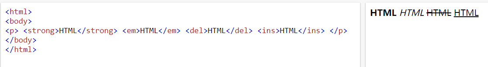
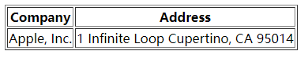
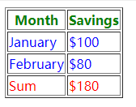

HTML
HTML常用标签
1.排版标签
| 标签名 | 定义 | 说明 |
|---|---|---|
| 标题标签 | 作为标题使用，并且依据重要性递减 | |
| 段落标签 | 可以把 HTML 文档分割为若干段落 | |
| 水平线标签 | ||
| 换行标签 | ||
| div标签 | 用来布局的，但是现在一行只能放一个div | |
| span标签 | 用来布局的，一行上可以放好多个span |
| 标签名 | 说明 |
|---|---|
| 表示文档、页面、应用或网站中的独立结构，其意在成为可独立分配的或可复用的结构 | |
| body 或应用的主体部分 | |
| 表示一个包含在HTML文档中的独立部分 |
2.文本格式化标签
| 标签名 | 样式 | 说明 |
|---|---|---|
| 粗体 | 推荐使用strong | |
| 斜体 | 推荐使用em | |
| 删除线 | 推荐使用del | |
| 下划线 | 推荐使用ins |
在默认的 HTML 样式表定义中，b 和 strong 的样式一样，为 { font-weight: bolder }；而 em 的默认样式为 { font-style: italic }，与 i 相同。b 和 i 是样式上强调，strong 和 em 是语义上强调。strong>em

| 标签名 | 样式 | 说明 |
|---|---|---|
| 缩写 | 推荐使用strong | |
| 联系信息 | 看起来只是斜体，但表示了语义信息 | |
<blockquote |
短引用 块引用 |
所有文本都会从常规文本中分离出来，增加外边距 |
| 引用 | 比如书籍或杂志的标题。 | |
|
代码 | 以浏览器的默认等宽字体显示 |
| 上标文本 下标文本 |
||
| 呈现小号字体效果 | font-size: smaller; | |
| 预格式文本 | 保留空格和换行符，而文本也会呈现为等宽字体 | |
| 添加语义 添加时间 |
将一个指定内容和机器可读的翻译联系在一起 让以机器可读的格式表示日期和时间 |
|
| 变量 | 样式斜体 |
<data value="21053">圣女果</data>
<p>我在 <time datetime="2010-02-14">情人节</time> 有个约会。</p>
<pre>
for i = 1 to 10
print i
</pre>
3.链接标签
<a href="跳转目标" target="目标窗口的弹出方式">文本或图像</a>
| 属性 | 作用 |
|---|---|
| href | 用于指定链接目标的url地址 |
| target | 用于指定链接页面的打开方式，_blank，_parent _self，_top |
| type | 规定被链接目标的的 MIME 类型。 |
href 属性值定义为#(即href="#")，表示该链接暂时为一个空链接，会返回页面顶部。
锚点定位
1. 使用相应的id名标注跳转目标的位置。
<h3 id="two">第2集</h3>
2. 使用<a href="#id名">链接文本</a>创建链接文本
<a href="#two">
base 标签
<base target="_blank" />
**总结： **
- base 可以设置整体链接的打开状态
- base 写到 之间
- 把所有的连接 都默认添加 target="_blank"
4.注释标签
在HTML中还有一种特殊的标签——注释标签。如果需要在HTML文档中添加一些便于阅读和理解但又不需要显示在页面中的注释文字，就需要使用注释标签。
<!-- 注释语句 -->
<div>...</div>
注释内容前后各一个空格字符，注释位于要注释代码的上面，单独占一行。
6. 特殊字符
| 显示结果 | 描述 | 实体名称 |
|---|---|---|
| 空格 | ||
| < | 小于号 | < |
| > | 大于号 | > |
| & | 和号 | & |
| " | 引号 | " |
| ' | 撇号 | ' (IE不支持) |
| ￠ | 分（cent） | ¢ |
| £ | 镑（pound） | £ |
| ¥ | 元（yen） | ¥ |
| € | 欧元（euro） | € |
| § | 小节 | § |
| © | 版权（copyright） | © |
| ® | 注册商标 | ® |
| ™ | 商标 | ™ |
| × | 乘号 | × |
| ÷ | 除号 | ÷ |
表格
1. 创建表格
<table border="1">
<tr>
<th>Company</th>
<th>Address</th>
</tr>
<tr>
<td>Apple, Inc.</td>
<td>1 Infinite Loop Cupertino, CA 95014</td>
</tr>
</table>

**总结： **
- 一个完整的表格有表格标签（table），行标签（tr），单元格标签（td）组成，没有列的标签
<tr>中只能嵌套<td>类的单元格<td>标签，就像一个容器，可以容纳所有的元素<th>一般表头单元格位于表格的第一行或第一列，并且文本加粗居中，只需用表头标签替代相应的单元格标签 即可
tr=table row; td=table data cell; th=table header cell
2.thead/tbody/tfoot
thead, tbody, tfoot三个标签的使用目的是把一个表格分成三个大的部分，每个部分存放不同的东西，这样这个表格就会比较有结构
<html>
<head>
<style type="text/css">
thead {color:green}
tbody {color:blue;height:50px}
tfoot {color:red}
</style>
</head>
<body>
<table border="1">
<thead>
<tr>
<th>Month</th>
<th>Savings</th>
</tr>
</thead>
<tbody>
<tr>
<td>January</td>
<td>$100</td>
</tr>
<tr>
<td>February</td>
<td>$80</td>
</tr>
</tbody>
<tfoot>
<tr>
<td>Sum</td>
<td>$180</td>
</tr>
</tfoot>
</table>
</body>
</html>

3. 表格属性
表格有部分属性我们不常用，这里重点记住 cellspacing 、 cellpadding。


4. 表格标题 caption
定义和用法
<table border="1">
<caption>我的标题</caption>
<tr>
<td>100</td>
<td>200</td>
<td>300</td>
</tr>
<tr>
<td>400</td>
<td>500</td>
<td>600</td>
</tr>
</table>

**注意： **
- caption 元素定义表格标题，通常这个标题会被居中且显示于表格之上。
- caption 标签必须紧随 table 标签之后。
- 这个标签只存在 表格里面才有意义。
5.合并单元格
5.1 合并单元格2种方式
- 跨行合并：
rowspan="合并单元格的个数" - 跨列合并：
colspan="合并单元格的个数"
5.2 合并单元格顺序
**合并的顺序我们按照 先上 后下 先左 后右 的顺序 **
5.3 合并单元格三步曲
- 先确定是跨行还是跨列合并
- 根据先上-后下-先左-后右的原则找到目标单元格，然后写上合并方式 还有要合并的单元格数量 ，比如 ：
<td colspan="3"> </td>
- 删除多余的单元格 单元格

列表
1.无序列表 ul
<ul>
<li>列表项1</li>
<li>列表项2</li>
<li>列表项3</li>
......
</ul>
2. 有序列表 ol
- reversed 属性产生倒序的数字列表。
- start 属性的值是一个整数，表示数字列表的起始编号。
- type 属性指定数字编号的样式
- a：小写字母
- A：大写字母
- i：小写罗马数字
- I：大写罗马数字
- 1：整数（默认值）
<ol reversed>
<li>列表项1</li>
<li>列表项2</li>
<li>列表项3</li>
......
</ol>
3 自定义列表
标签是一个块级元素，表示一组术语的列表（description list）。术语名（description term）由标签定义，术语解释（description detail）由标签定义。
常用来定义词汇表。
<dl>
<dt>CPU</dt>
<dd>中央处理器</dd>
<dt>Memory</dt>
<dd>内存</dd>
<dt>Hard Disk</dt>
<dd>硬盘</dd>
</dl>
和都是块级元素，默认会在下方缩进显示。上面代码的默认渲染结果如下
CPU
中央处理器
Memory
内存
Hard Disk
硬盘
表单
form
<form action="https://example.com/api" method="post">
<label for="POST-name">用户名：</label>
<input id="POST-name" type="text" name="user">
<input type="submit" value="提交">
</form>
有以下属性
- accept-charset：服务器接受的字符编码列表，使用空格分隔，默认与网页编码相同。
- action：服务器接收数据的 URL。
- autocomplete：如果用户没有填写某个控件，浏览器是否可以自动填写该值。它的可能取值分别为off（不自动填写）和on（自动填写）。
- method：提交数据的 HTTP 方法，可能的值有post（表单数据作为 HTTP 数据体发送），get（表单数据作为 URL 的查询字符串发送），dialog（表单位于内部使用）。
- enctype：当method属性等于post时，该属性指定提交给服务器的 MIME 类型。可能的值为application/x-www-form-urlencoded（默认值），multipart/form-data（文件上传的情况），text/plain。
- name：表单的名称，应该在网页中是唯一的。注意，如果一个控件没有设置name属性，那么这个控件的值就不会作为键值对，向服务器发送。
- novalidate：布尔属性，表单提交时是否取消验证。
- target：在哪个窗口展示服务器返回的数据，可能的值有_self（当前窗口），_blank（新建窗口），_parent（父窗口），_top（顶层窗口），